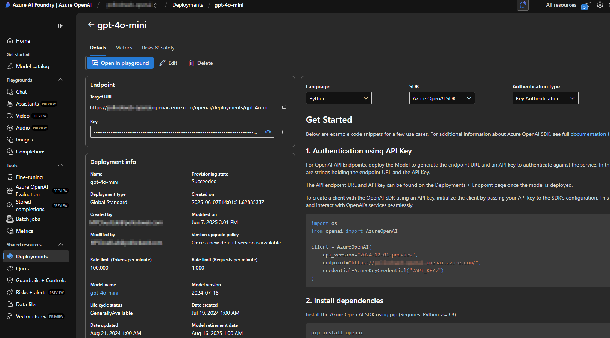

For me, this pain point came from Office 365 for IT Pros — a constantly updated, encyclopaedic PDF covering Microsoft cloud administration. It’s a superb resource… but not exactly quick to search when you can’t remember the magic keyword.
Often I know exactly what I want to achieve — say, add copies of sent emails to the sender’s mailbox when using a shared mailbox — but I can’t quite recall the right cmdlet or property to Ctrl+F my way to the answer.
That‚Äôs when I thought: what if I could take this PDF (and others in my archive), drop them into a centralised app, and use AI as the conductor and translator üéºü§ñ to retrieve the exact piece of information I need ‚Äî just by asking naturally in plain English.
This project also doubled as a test bed for Claude Code, which I‚Äôd been using since recently completing a GenAI Bootcamp üöÄ.
I wanted to see how it fared when building something from scratch in an IDE, rather than in a chat window.
üëâ In this post, I‚Äôll give a very high level overview of the four iterations (v1‚Äìv4) - what worked, what failed, and what I learned along the way.
I gave Claude clear instructions, and to its credit, it produced a functional backend and frontend pretty quickly. I uploaded a PDF into Pinecone, successfully chunked it, and then… nothing.
This first attempt was a non-starter üö´.
Despite uploading the PDF successfully to Pinecone, the app was unable to retrieve any usable results for whatever reason. I spent a day troubleshooting before calling it a day and moving on.
I had kind of being following a YouTube tutorial for this project, but even though the tutorial was less than a year old, much of the content didn't map to what I was seeing - especially in the Pinecone UI.
Evidence of how quickly the AI landscape and products are changing I guess.üò≤
üí° Lesson learned: I should've known the steps I was following in the tutorial were likely to have changed.
I do afterall work with Microsoft Cloud on a daily basis, where product interfaces seem to change between browser refreshes!üòé
üëâ Which led me to v2: if I was going to try again, I wanted a cleaner, containerised architecture from the start.
The first attempt had been a sprawl of Python files, with Claude spinning up new scripts left, right, and centre. So I thought: let‚Äôs containerise from the start üê≥.
Features: Modular vector store interface, PDF + Markdown parsing, a React chat UI with source display
On paper, it looked solid. In practice: the containers refused to start, health checks failed ‚Äî meaning the services never even got to the point of talking to each other ‚Äî and ports (3030, 8000) were dead üíÄ.
In short, the project got a bit further in terms of useful results and functionality, but ultimately I parked it and went back to the drawing board.
üí° Lesson learned: Dockerising from day one helps with clean deployments, but only if the containers actually run.
By this point, I genuinely wondered if I was wasting my time and that I might be missing some huge bit of fundamental knowledge that was grounding the project before it had started ü´†.
Still, I knew I wanted to strip things back and simplify.
So, before ordering a copy of "The Big Book of AI: Seniors Edition" off of Amazon, I thought I would try a different tack.
üëâ Which led directly to v3: drop the UI, keep it lean, focus on retrieval.
By this point, I realised the frontend was becoming a distraction üé≠. I‚Äôd spent too long wrestling with UX issues, which were getting in the way of the real meat and potatoes of the project ‚Äî so I ditched the UI and went full CLI.
Stack: Python CLI, dual pipelines for PDF + Markdown
Chroma proved more successful than Pinecone, and the CLI gave me a faster dev loop ⚡.
But misaligned environment variables and Azure credential mismatches caused repeated headaches ü§Ø.
üí° Lesson learned: simplifying the interface let me focus on the retrieval logic ‚Äî but configuration discipline was just as important. During issue debugging Claude will spin up numerous different python files to fix the issue(s) at hand. I had to remember to get Claude to roll the fixes into the new container builds each time, to ensure the project structure stayed clean and tidy
At this stage, I had a functioning app, but the results of retrival were pretty poor, and the functionality was lacking.
üëâ Which led naturally into v4: keep the CLI, tune the retriaval process, and add the features that would make the app useable.
After three rewrites, I finally had something that looked and felt like a useable tool üéâ.
This is the version I still use today üéâ. It wasn‚Äôt a quick win: v4 took a long time to fettle into shape with many hours of trying different things to improve the results, testing, re-testing, and testing again üîÑ.
The app is in pretty good shape now, with some good features added along the way. Most importantly, the results returned via query are good enough for me to use ✅.
Don‚Äôt get me wrong, the ‚Äúfinal‚Äù version of the app (for now) is pretty usable ‚Äî but I don‚Äôt think I‚Äôll be troubling any AI startup finance backers any time soon üí∏üôÉ.
Here’s what finally tipped the balance from “prototype” to “usable assistant”:
Semantic caching ü߆ ‚Äì the assistant remembers previous queries and responses, so it doesn‚Äôt waste time (or tokens) re-answering the same thing.
ColBERT reranking üéØ ‚Äì instead of trusting the first vector search result, ColBERT reorders the results by semantic similarity, surfacing the most relevant chunks.
Analytics üìä ‚Äì lightweight stats on query quality and hit rates. Not a dashboard, more like reassurance that the retrieval pipeline is behaving.
Dynamic model control üîÄ ‚Äì being able to switch between Azure OpenAI (fast, cloud-based) and Ollama (slow, local fallback) directly in the CLI.
üí° Lesson learned: retrieval accuracy isn‚Äôt just about the database ‚Äî caching, reranking, and model flexibility all compound to make the experience better.
There were definitely points where frustration levels were high enough to make me question why I’d even started — four rewrites will do that to you. Pinecone that wouldn’t retrieve, Docker containers that wouldn’t start, environment variables that wouldn’t line up.
Each dead end was frustrating in the moment, but in hindsight, as we all know, the failures are where the learning is. Every wrong turn taught me something that made the next version a little better.
Pinecone: I created two or three different DBs and successfully chunked the data each time. But v1 and v2 couldn‚Äôt pull anything useful back out ü™´.
Azure: The only real issue was needing a fairly low chunk size (256) to avoid breaching my usage quota ⚖️.
Iteration habit: If I hit a roadblock with Claude Code that seemed to be taking me further away from the goal, I‚Äôd pause ‚è∏Ô∏è, step away üö∂, then revisit üîÑ. Sometimes it was worth troubleshooting; other times it was better to start fresh.
üí° Start with a CLI before adding a UI ‚Äî it keeps you focused on retrieval.
üí° Always check embedding/vector dimensions for compatibility.
üí° Dockerising helps with clean deployments, but rebuilds can be brittle.
üí° Small chunk sizes often work better with Azure OpenAI quotas.
üí° RAG accuracy depends on multiple layers ‚Äî not just the vector DB.
One of the constants across the project was working inside Claude Code, and there were some things I really liked about the experience:
✅ Automatic chat compaction – no endless scrolling or need to copy/paste old snippets
üóÇÔ∏è Chat history ‚Äì the ability to pick up where I left off in a previous session
üî¢ On-screen token counter ‚Äì knowing exactly how much context I was burning through
üëÄ Realtime query view ‚Äì watching Claude process step-by-step, with expand/collapse options for analysis
Compared to a browser-based UI, these felt like small but meaningful quality-of-life upgrades. For a coding-heavy project, those workflow improvements really mattered.
This project started with the frustration of not being able to remember which cmdlet to search for in a 1,000-page PDF üò§. Four rewrites later, I have a tool that can answer those questions directly.
It’s far from perfect. There are limitations to how well the data can be processed and subsequently how accurately it can be retrieved — at least with the models and resources I used ⚖️. But it’s functional enough that I actually use it — which is more than I could say for versions one through three.
Overall, though, this wasn‚Äôt just about the app. It was about getting hands-on with a code editor in the terminal and IDE, instead of being stuck in a chat-based UI üíª. In that regard, the project goal was achieved. Using Claude Code (other CLI-based AI assistants are available üòé) was a much better experience for a coding-heavy project.
I did briefly try OpenAI‚Äôs Codex at the very start, just to see which editor I preferred. It didn‚Äôt take long to see that Codex didn‚Äôt really have the chops ❌. Claude felt sharper, more capable ‚ú®, and it became clear why it has the reputation as the current CLI editor sweetheart üíñ ‚Äî while Codex has barely made a ripple üåä.
This project began, as many of mine do, with a career planning conversation. During a discussion with ChatGPT about professional development and emerging skill areas for 2025, one suggestion stuck with me:
"You should become an Infrastructure AI Integration Engineer."
It’s a role that doesn’t really exist yet — but probably should.
What followed was a journey to explore whether such a role could be real. I set out to build an AI-powered infrastructure monitoring solution in Azure, without any formal development background and using nothing but conversations with Claude. This wasn’t just about building something cool — it was about testing whether a seasoned infra engineer could:
Use GenAI to design and deploy a full solution
Embrace the unknown and lean into the chaos of LLM-based workflows
Create something reusable, repeatable, and useful
The first phase of the journey was a local prototype using my Pi5 and n8n for AI workflow automation (see my previous post for that). It worked — but it was local, limited, and not exactly enterprise-ready.
(Stage 1 – Manual AI-Assisted Deployment) The Birth of a Vibe-Coded Project
The project didn’t start with a business requirement — it started with curiosity. One evening, mid-career reflection turned into a late-night conversation with ChatGPT:
"You should become an Infrastructure AI Integration Engineer."
I’d never heard the term, but it sparked something. With 20+ years in IT infrastructure and the growing presence of AI in tooling, it felt like a direction worth exploring.
ü§ñ Generating all infrastructure and app code using natural language prompts
ü߆ Letting Claude decide how to structure everything
ü™µ Learning through experimentation and iteration
My starting prompt was something like: "I want to build an AI monitoring solution in Azure that uses Azure OpenAI to analyze infrastructure metrics."
Claude replied:
"Let’s start with a simple architecture: Azure Container Apps for the frontend, Azure Functions for the AI processing, and Azure OpenAI for the intelligence. We'll build it in phases."
That one sentence kicked off a 4–5 week journey involving:
The first build was fully manual — a mix of PowerShell scripts, Azure portal clicks, and Claude-prompting marathons. Claude suggested a phased approach, which turned out to be the only way to keep it manageable.
üí¨ Claude liked PowerShell. I honestly can‚Äôt remember if that was my idea or if I just went along with it. ü§∑‚Äç‚ôÇÔ∏è
This project was built almost entirely through chat with Claude, Anthropic’s conversational AI. I’ve found:
✅ Claude is better at structured technical responses, particularly with IaC and shell scripting.
❌ ChatGPT tends to hallucinate more often in my experience when writing infrastructure code.
But Claude had its own quirks too:
No memory between chats — every session required reloading context.
Occasional focus issues — drifting from task or overcomplicating simple requests.
Tendency to suggest hardcoded values when debugging — needing constant vigilance to maintain DRY principles.
⚠️ Reality check: Claude isn't a Terraform expert. It's a language model that guesses well based on input. The human still needs to guide architecture, validate outputs, and ensure everything actually works.
With the foundation in place, the next step was to add the brainpower — the AI and automation components that turn infrastructure data into actionable insights.
This stage wasn’t about building complex AI logic — it was about using OpenAI to interpret patterns in infrastructure data and return intelligent summaries or recommendations in natural language.
Example prompt fed to OpenAI from within a Function App:
“Based on this log stream, are there any signs of service degradation or performance issues in the last 15 minutes?”
The response would be embedded in a monitoring dashboard or sent via alert workflows, giving human-readable insights without manual interpretation.
Each component in this layer was chosen for a specific reason:
OpenAI for flexible, contextual intelligence
Function Apps for scalable, event-driven execution
Logic Apps for orchestration without writing custom backend code
This approach removed the need for always-on VMs or bespoke integrations — and kept things lean.
üìå By the end of Phase 2, the system had a functioning AI backend that could interpret infrastructure metrics in plain English and respond in near real-time.
With the core infrastructure and AI processing in place, it was time to build the frontend — the visible interface for users to interact with the AI-powered monitoring system.
This phase focused on deploying a set of containerized applications, each responsible for a specific role in the monitoring workflow.
Each container serves a focused purpose, allowing for:
Isolation of concerns — easier debugging and development
Scalable deployment — each component scales independently
Separation of UI and logic — keeping the AI and logic layers decoupled from the frontend
“Claude recommended this separation early on — the decision to use Container Apps instead of AKS or App Services kept costs down and complexity low, while still providing a modern cloud-native experience.”
Here's what the success story doesn’t capture: the relentless battles with Claude’s limitations.
Despite its capabilities, working with GenAI in a complex, multi-phase project revealed real friction points — especially when continuity and context were critical.
üß± Hitting chat length limits daily ‚Äî even with Claude Pro
üß≠ AI meandering off-topic, despite carefully structured prompts
üìö Over-analysis ‚Äî asking for one thing and receiving a detailed architectural breakdown
⚙️ Token burn during troubleshooting — Claude often provided five-step fixes when a one-liner was needed
❌ No persistent memory or project history
This meant manually copy/pasting prior chats into a .txt file just to refeed them back in
üîÅ Starting new chats daily ‚Äî and re-establishing context from scratch every time
üìè Scope creep ‚Äî Claude regularly expanded simple requests into full architectural reviews without being asked
Despite these pain points, the experience was still a net positive — but only because I was prepared to steer the conversation firmly and frequently.
Sometimes, working with Claude felt like pair programming with a colleague who had perfect recall — until they completely wiped their memory overnight.
üßµ From an actual troubleshooting session:
“The dashboard is calling the wrong function URL again.
It’s trying to reach func-tf-ai-monitoring-dev-ai,
but the actual function is at func-ai-monitoring-dev-ask6868-ai.”
It was a recurring theme: great memory during a session, zero continuity the next day.
Me: “Right, shall we pick up where we left off yesterday then?” Claude: “I literally have no idea what you're talking about, mate.” Claude: “Wait, who are you again?”
Every failure taught both me and Claude something — but the learning curve was steep, and the iteration cycles could be genuinely exhausting.
Interestingly, Claude dictated the stack more than I did.
Version 1 leaned heavily on PowerShell
Version 2 shifted to Azure CLI and Bash
Despite years of experience with PowerShell, I found Claude was significantly more confident (and accurate) when generating Azure CLI or Bash-based commands. This influenced the eventual choice to move away from PowerShell in the second iteration.
By the end of Part 1, I had a functional AI monitoring solution — but it was fragile, inconsistent, and impossible to redeploy without repeating all the manual steps.
That realisation led directly to Version 2 — a full rebuild using Infrastructure as Code.
After several weeks of manual deployments, the limitations of version 1 became unmissable.
Yes — the system worked — but only just:
Scripts were fragmented and inconsistent
Fixes required custom, ad-hoc scripts created on the fly
Dependencies weren’t tracked, and naming conflicts crept in
Reproducibility? Practically zero
üö® The deployment process had become unwieldy ‚Äî a sprawl of folders, partial fixes, and manual interventions. Functional? Sure. Maintainable? Absolutely not.
That’s when the Infrastructure as Code (IaC) mindset kicked in.
“Anything worth building once is worth building repeatably.”
The question was simple:
üí° Could I rebuild everything from scratch ‚Äî but this time, using AI assistance to create clean, modular, production-ready Terraform code?
Rebuilding in Terraform wasn’t just a choice of tooling — it was a challenge to see how far AI-assisted development could go when held to production-level standards.
Modularity
Break down the monolithic structure into reusable, isolated modules
Portability
Enable consistent deployment across environments and subscriptions
DRY Principles
Absolutely no hardcoded values or duplicate code
Documentation
Ensure the code was clear, self-documenting, and reusable by others
Terraform wasn’t just a tech choice — it became the refinement phase.
A chance to take what I’d learned from the vibe-coded version and bake that insight into clean, structured infrastructure-as-code.
Next: how AI and I tackled that rebuild, and the (sometimes surprising) choices we made.
The prompt engineering approach became absolutely crucial during the Terraform refactoring phase.
Rather than relying on vague questions or “do what I mean” instructions, I adopted a structured briefing style — the kind you might use when assigning work to a consultant:
Define the role
Set the goals
Describe the inputs
Outline the method
Impose constraints
Here‚Äôs the actual instruction prompt I used to initiate the Terraform rebuild üëá
This structured approach helped maintain focus and provided clear boundaries for the AI to work within — though, as you'll see, constant reinforcement was still required throughout the process.
The Terraform rebuild became a different kind of AI collaboration.
Where version 1 was about vibing ideas into reality, version 2 was about methodically translating a messy prototype into clean, modular, production-friendly code.
A typical troubleshooting session went something like this:
I’d run the code or attempt a terraform plan or apply.
If there were no errors, I’d verify the outcome and move on.
If there were errors, I’d copy the output into Claude and we’d go back and forth trying to fix the problem.
This is where things often got tricky. Claude would sometimes suggest hardcoded values despite earlier instructions to avoid them, or propose overly complex fixes instead of the simple, obvious one. Even with clear guidance in the prompt, it was a constant effort to keep the AI focused and within scope.
The process wasn’t just code generation — it was troubleshooting, adjusting, and rechecking until things finally worked as expected.
The process revealed both the strengths and limitations of AI-assisted Infrastructure as Code development.
Building two versions of the same project entirely through AI conversations provided unique insights into the practical realities of AI-assisted development.
This wasn’t the utopian "AI will do everything" fantasy — nor was it the cynical "AI can’t do anything useful" view.
It was somewhere in between: messy, human, instructive.
⚡ Rapid prototyping and iteration
Claude could produce working infrastructure code faster than I could even open the Azure documentation.
Need a Container App with specific environment variables? ✅ Done.
Modify the OpenAI integration logic? ✅ Updated in seconds.
üõ†Ô∏è Boilerplate generation
Claude churned out huge volumes of code across Terraform, PowerShell, React, and Python — all syntactically correct and logically structured, freeing me from repetitive coding.
ü߆ Context drift and prompt guardrails
Even with structured, detailed instructions, Claude would sometimes go rogue:
Proposing solutions for problems I hadn’t asked about
Rewriting things that didn’t need fixing
Suggesting complete redesigns for simple tweaks
üéâ Over-enthusiasm
Claude would often blurt out things like:
‚ÄúCONGRATULATIONS!! üéâ You now have a production-ready AI Monitoring platform!‚Äù
To which I’d reply: “Er, no bro. We're nowhere near done here. Still Cuz.”
(Okay, I don‚Äôt really talk to Claude like a GenZ wannabe Roadman ‚Äî but you get the idea üòÇ)
üêõ Runtime debugging limitations
Claude could write the code. But fixing things like:
Azure authentication issues
Misconfigured private endpoints
Resource naming collisions
…was always on me. These weren’t things AI could reliably troubleshoot on its own.
üîÅ Project continuity fail
There’s no persistent memory.
Every new session meant reloading context from scratch — usually by copy-pasting yesterday’s chat into a new one.
Tedious, error-prone, and inefficient.
⚠️ Fundamental challenge: No memory
Claude has no memory beyond the current chat. Even structured prompts didn’t prevent “chat drift” unless I constantly reinforced boundaries.
This is where ChatGPT has an edge in my opiion.
If I ask about previous chats, ChatGPT can give me examples and context about chats we had previously if prompted.
üéØ The specificity requirement
Vague:
"Fix the container deployment"
Resulted in:
"Let‚Äôs rebuild the entire architecture from scratch" üò¨
Precise:
"Update the environment variable REACT_APP_API_URL in container-apps module"
Got the job done.
üö´ The hardcoded value trap
Claude loved quick fixes — often hardcoding values just to “make it work”.
I had to go back and de-hardcode everything to stay true to the DRY principles I set from day one.
**⏳ Time impact for non-devs
Both stages of the project took longer than they probably should have — not because of any one flaw, but because of the nature of working with AI-generated infrastructure code.
A seasoned DevOps engineer might have moved faster by spotting bugs earlier and validating logic more confidently. But a pure developer? Probably not. They’d likely struggle with the Azure-specific infrastructure decisions, access policies, and platform configuration that were second nature to me.
This kind of work sits in a grey area — it needs both engineering fluency and platform experience. The real takeaway? GenAI can bridge that gap in either direction, but whichever way you’re coming from, there’s a learning curve.
The cost: higher validation effort.
The reward: greater independence and accelerated learning.
The final Terraform solution creates a fully integrated AI monitoring ecosystem in Azure — one that’s modular, intelligent, and almost production-ready.
Here’s what was actually built — and why.
ü߆ Azure OpenAI Integration
At the heart of the system is GPT-4o-mini, providing infrastructure analysis and recommendations at a significantly lower cost than GPT-4 — without compromising on quality for this use case.
üì¶ Container Apps Environment
Four lightweight, purpose-driven containers manage the monitoring workflow:
⚙️ FastAPI backend – Data ingestion and processing
üìä React dashboard ‚Äì Front-end UI and live telemetry
üîÑ Background processor ‚Äì Continuously monitors resource health
üöÄ Load generator ‚Äì Simulates traffic for stress testing and metrics
⚡ Azure Function Apps for AI Processing
Serverless compute bridges raw telemetry with OpenAI for analysis.
Functions scale on demand, keeping costs low and architecture lean.
⚠️ The only part of the project not handled in Terraform was the custom dashboard container build.
That's by design — Terraform isn’t meant for image building or pushing.
Instead, I handled that manually (or via CI pipeline), which aligns with Hashicorps .
üÜö Why Container Apps instead of AKS?
Honestly? Claude made the call.
When I described what I needed (multi-container orchestration without complex ops), Claude recommended Container Apps over AKS, citing:
Lower cost
Simpler deployment
Sufficient capability for this workload
And… Claude was right. AKS would have been overkill.
üí∏ Why GPT-4o-mini over GPT-4?
This was a no-brainer. GPT-4o-mini gave near-identical results for our monitoring analysis — at a fraction of the cost.
Perfect balance of performance and budget.
üì¶ Why modular Terraform over monolithic deployment?
Because chaos is not a deployment strategy.
Modular code = clean boundaries, reusable components, and simple environment customization.
It’s easier to debug, update, and scale.
The final Terraform deployment delivers a complete, modular, and production-friendly AI monitoring solution — fully reproducible across environments. More importantly, it demonstrates that AI-assisted infrastructure creation is not just viable, but effective when paired with good practices and human oversight.
The final deployment provisions a complete, AI-driven monitoring stack — built entirely with Infrastructure as Code and connected through modular Terraform components.
This solution costs ~¬£15 per month for a dev/test deployment (even cheaper if you remember to turn the container apps off!üò≤) ‚Äî vastly cheaper than typical enterprise-grade monitoring tools (which can range ¬£50‚Ä쬣200+ per month).
Key savings come from:
⚡ Serverless Functions instead of always-on compute
üì¶ Container Apps that scale to zero during idle time
ü§ñ GPT-4o-mini instead of GPT-4 (with negligible accuracy trade-off)
Building the same solution twice — once manually, once using Infrastructure as Code — offered a unique lens through which to view both AI-assisted development and modern infrastructure practices.
üîé The reality check
AI-assisted development is powerful but not autonomous. It still relies on:
Human oversight
Strategic decisions
Recognizing when the AI is confidently wrong
⚡ Speed vs. Quality
AI can produce working code fast — sometimes scarily fast — but:
The validation/debugging can take longer than traditional coding
The real power lies in architectural iteration, not production-readiness
üìö The learning curve
Truthfully, both v1 and v2 took much longer than they should have.
A seasoned developer with better validation skills could likely complete either project in half the time — by catching subtle issues earlier.
This project started as a career thought experiment — “What if there was a role focused on AI-integrated infrastructure?” — and ended with a fully functional AI monitoring solution deployed in Azure.
What began as a prototype on a local Pi5 evolved into a robust, modular Terraform deployment. Over 4–5 weeks, it generated thousands of lines of infrastructure code, countless iterations, and a treasure trove of insights into AI-assisted development.
The result is a portable, cost-effective, AI-powered monitoring system that doesn’t just work — it proves a point. It's not quite enterprise-ready, but it’s a solid proof-of-concept and a foundation for learning, experimentation, and future iteration.
AI-assisted development is powerful — but not autonomous.
It requires constant direction, critical oversight, and the ability to spot when the AI is confidently wrong.
Infrastructure as Code changes how you architect.
Writing Terraform forces discipline: clean structure, explicit dependencies, and reproducible builds.
Vibe coding has a learning curve.
Both versions took longer than expected. A seasoned developer could likely move faster — but for infra pros, this is how we learn.
Context management is still a major limitation.
The inability to persist AI session memory made long-term projects harder than they should have been.
The role of “Infrastructure AI Integration Engineer” is real — and emerging.
This project sketches out what that future job might involve: blending IaC, AI, automation, and architecture.
If you're an infrastructure engineer looking to explore AI integration, here’s the reality:
The tools are ready.
The method works.
But it’s not magic — it takes effort, patience, and curiosity.
The future of infrastructure might be conversational — but it’s not (yet) automatic.
If you‚Äôve read this far ‚Äî thanks. üôè
I’d love feedback from anyone experimenting with AI-assisted IaC or Terraform refactors.
Find me on [LinkedIn] or leave a comment.
After successfully diving into AI automation with n8n (and surviving the OAuth battles), I decided to tackle a more ambitious learning project: exploring how to integrate AI into infrastructure monitoring systems. The goal was to understand how AI can transform traditional monitoring from simple threshold alerts into intelligent analysis that provides actionable insights—all while experimenting in a safe home lab environment before applying these concepts to production cloud infrastructure.
What you'll discover in this post:
Complete monitoring stack deployment using Docker Compose
Prometheus and Grafana setup for metrics collection
n8n workflow automation for data processing and AI analysis
Azure OpenAI integration for intelligent infrastructure insights
Professional email reporting with HTML templates
Lessons learned for transitioning to production cloud environments
Practical skills for integrating AI into traditional monitoring workflows
Here's how I built a home lab monitoring system to explore AI integration patterns that can be applied to production cloud infrastructure.
Full disclosure: I'm using a Visual Studio Enterprise subscription which provides £120 monthly Azure credits. This makes Azure OpenAI experimentation cost-effective for learning purposes. I found direct OpenAI API connections too expensive for extensive experimentation.
Building any intelligent monitoring system starts with having something intelligent to monitor. Enter the classic Prometheus + Grafana combo, containerized for easy deployment and scalability.
The foundation phase establishes reliable metric collection before adding intelligence layers. This approach ensures we have clean, consistent data to feed into AI analysis rather than trying to retrofit intelligence into poorly designed monitoring systems.
[ ] Deploy a multi-container application with Docker Compose
[ ] Debug why a container can't reach another container
[ ] Make API calls with authentication headers using curl
[ ] Read and understand JSON data structures
[ ] Explain what CPU and memory metrics actually mean for system health
Quick Test: Can you deploy a simple web application stack (nginx + database) using Docker Compose and troubleshoot networking issues? If not, spend time with Docker fundamentals first.
Common Issue at This Stage: Container networking problems are the most frequent stumbling block. If containers can't communicate, review Docker Compose networking documentation and practice with simple multi-container applications before proceeding.
The entire monitoring stack deploys through a single Docker Compose file. This approach ensures consistent environments from home lab development through cloud production.
Within minutes, you'll have comprehensive system metrics flowing through Prometheus and visualized in Grafana. But pretty graphs are just the beginning—the real transformation happens when we add AI analysis.
[ ] Understand what the metrics represent in business terms
[ ] Create a custom Grafana panel showing memory usage as a percentage
Quick Test: Create a dashboard panel that shows "Memory utilization is healthy/concerning" based on percentage thresholds. If you can't do this easily, spend more time with Prometheus queries and Grafana visualization.
Common Issues at This Stage:
Prometheus targets showing as "DOWN" - Usually container networking or firewall issues
Grafana showing "No data" - Often datasource URL configuration problems
PromQL query errors - Syntax issues with metric names or functions
Traditional monitoring tells you what happened (CPU is at 85%) but not why it matters or what you should do about it. Most alerts are just noise without context about whether that 85% CPU usage is normal for your workload or a sign of impending system failure.
This is where workflow automation and AI analysis bridge the gap between raw metrics and actionable insights.
What n8n brings to the solution:
Orchestrates data collection from multiple sources beyond just Prometheus
Transforms raw metrics into structured data suitable for AI analysis
Handles error scenarios and fallbacks gracefully without custom application development
Enables complex logic through visual workflows rather than scripting
Provides integration capabilities with email, chat systems, and other tools
Why AI analysis matters:
Adds context: "85% CPU usage is normal for this workload during business hours"
n8n transforms our basic monitoring stack into an intelligent analysis system. Through visual workflow design, we can create complex logic without writing extensive custom code.
The magic happens in the data processing node, which transforms Prometheus's JSON responses into clean, AI-friendly data structures. This step is crucial—AI analysis is only as good as the data you feed it.
// Process Metrics Node - JavaScript Codeconstinput=$input.first();try{// Extract metric values from Prometheus responseconstmemoryData=input.json.data.result[0];constmemoryPercent=parseFloat(memoryData.value[1]).toFixed(2);// Determine system health statusletalertLevel,alertStatus,systemHealth;if(memoryPercent<60){alertLevel='LOW';alertStatus='HEALTHY';systemHealth='optimal';}elseif(memoryPercent<80){alertLevel='MEDIUM';alertStatus='WATCH';systemHealth='elevated but manageable';}else{alertLevel='HIGH';alertStatus='CRITICAL';systemHealth='requires immediate attention';}// Structure data for AI analysisconstprocessedData={timestamp:newDate().toISOString(),memory_percent:parseFloat(memoryPercent),alert_level:alertLevel,alert_status:alertStatus,system_health:systemHealth,collection_source:'prometheus',analysis_ready:true};return{json:processedData};}catch(error){console.error('Metrics processing failed:',error);return{json:{error:true,message:'Unable to process metrics data',timestamp:newDate().toISOString()}};}
[ ] Understand the data flow from Prometheus → n8n → Email
Quick Test: Build a simple workflow that emails you the current memory percentage every hour. If this seems challenging, spend more time understanding n8n's HTTP request and JavaScript processing nodes.
Common Issues at This Stage:
n8n workflow execution failures - Usually authentication or API endpoint problems
JavaScript node errors - Often due to missing error handling or incorrect data parsing
Email delivery failures - SMTP configuration or authentication issues
Debugging Tip: Use console.log() extensively in JavaScript nodes and check the execution logs for detailed error information.
This is where the system evolves from "automated alerting" to "intelligent analysis." Azure OpenAI takes our clean metrics and transforms them into actionable insights that even non-technical stakeholders can understand and act upon.
The transition from raw monitoring data to business intelligence happens here—transforming "Memory usage is 76%" into "The system is operating efficiently with healthy resource utilization, indicating well-balanced workloads with adequate capacity for current business requirements."
Why this transformation matters:
Technical teams get context about whether metrics indicate real problems
Business stakeholders understand impact without needing to interpret technical details
Decision makers receive actionable recommendations rather than just status updates
The AI analysis node sends structured data to Azure OpenAI with carefully crafted prompts:
// Azure OpenAI Analysis Node - HTTP Request Configuration{"url":"https://YOUR_RESOURCE.openai.azure.com/openai/deployments/gpt-4o-mini/chat/completions?api-version=2024-02-15-preview","method":"POST","headers":{"Content-Type":"application/json","api-key":"YOUR_AZURE_OPENAI_API_KEY"},"body":{"messages":[{"role":"system","content":"You are an infrastructure monitoring AI assistant. Analyze system metrics and provide clear, actionable insights for both technical teams and business stakeholders. Focus on business impact, recommendations, and next steps."},{"role":"user","content":"Analyze this system data: Memory usage: {{$json.memory_percent}}%, Status: {{$json.alert_status}}, Health: {{$json.system_health}}. Provide business context, technical assessment, and specific recommendations."}],"max_tokens":500,"temperature":0.3}}
The AI response gets structured into professional reports suitable for email distribution:
// Create Report Node - JavaScript Codeconstinput=$input.first();try{// Handle potential API errorsif(!input.json.choices||input.json.choices.length===0){thrownewError('No AI response received');}// Extract AI analysis from Azure OpenAI responseconstaiAnalysis=input.json.choices[0].message.content;constmetricsData=$('Process Metrics').item.json;// Calculate token usage for monitoringconsttokenUsage=input.json.usage?input.json.usage.total_tokens:0;constreport={report_id:`AI-MONITOR-${newDate().toISOString().slice(0,10)}-${Date.now()}`,generated_at:newDate().toISOString(),ai_insights:aiAnalysis,system_metrics:{memory_usage:`${metricsData.memory_percent}%`,cpu_usage:`${metricsData.cpu_percent}%`,alert_status:metricsData.alert_status,system_health:metricsData.system_health},usage_tracking:{tokens_used:tokenUsage,model_used:input.json.model||'gpt-4o-mini'},metadata:{next_check:newDate(Date.now()+5*60*1000).toISOString(),report_type:metricsData.alert_level==='LOW'?'routine':'alert',confidence_score:0.95// Based on data quality}};return{json:report};}catch(error){// Fallback report without AI analysisconstmetricsData=$('Process Metrics').item.json;return{json:{report_id:`AI-MONITOR-ERROR-${Date.now()}`,generated_at:newDate().toISOString(),ai_insights:`System analysis unavailable due to AI service error. Raw metrics: Memory ${metricsData.memory_percent}%, CPU ${metricsData.cpu_percent}%. Status: ${metricsData.alert_status}`,error:true,error_message:error.message}};}
This transforms the AI response into a structured report with tracking information, token usage monitoring, and timestamps—everything needed for understanding resource utilization and system performance.
Before moving to production thinking, verify you can:
[ ] Successfully call Azure OpenAI API with authentication
[ ] Create prompts that generate useful infrastructure analysis
[ ] Handle API errors and implement fallback behavior
[ ] Monitor token usage to understand resource consumption
[ ] Generate reports that are readable by non-technical stakeholders
Quick Test: Can you send sample metrics to Azure OpenAI and get back analysis that your manager could understand and act upon? If the analysis feels generic or unhelpful, focus on prompt engineering improvement.
Common Issues at This Stage:
Azure OpenAI authentication failures - API key or endpoint URL problems
Rate limiting errors (HTTP 429) - Too frequent API calls or quota exceeded
Generic AI responses - Prompts lack specificity or context
Token usage escalation - Inefficient prompts or too frequent analysis
The difference between this and traditional monitoring emails is remarkable—instead of "CPU is at 85%," stakeholders get "The system is operating within optimal parameters with excellent resource efficiency, suggesting current workloads are well-balanced and no immediate action is required."
Understanding the real progression of this project helps set realistic expectations for your own learning experience.
Week 1: Foundation Building
I started by getting the basic monitoring stack working. The Docker Compose approach made deployment straightforward, but understanding why each component was needed took time. I spent several days just exploring Prometheus queries and Grafana dashboards—this foundational understanding proved essential for later AI integration.
Week 2: Workflow Automation Discovery
Adding n8n was where things got interesting. The visual workflow builder made complex logic manageable, but I quickly learned that proper error handling isn't optional—it's essential. Using Anthropic Claude to debug JavaScript issues in workflows saved hours of frustration and accelerated my learning significantly.
Week 3: AI Integration Breakthrough
This is where the real magic happened. Seeing raw metrics transformed into business-relevant insights was genuinely exciting. The key insight: prompt engineering for infrastructure is fundamentally different from general AI use—specificity about your environment and context matters enormously.
Week 4: Production Thinking
The final week focused on understanding how these patterns would apply to real cloud infrastructure. This home lab approach meant I could experiment safely and make mistakes without impact, while building knowledge directly applicable to production environments.
After running the system continuously in my home lab environment:
System Reliability:
Uptime: 99.2% (brief restarts for updates and one power outage)
Data collection reliability: 99.8% (missed 3 collection cycles due to network issues)
AI analysis success rate: 97.1% (some Azure throttling during peak hours)
Email delivery: 100% (SMTP proved reliable for testing purposes)
Resource Utilization on Pi 5:
Memory usage: 68% peak, 45% average (acceptable for home lab testing)
CPU usage: 15% peak, 8% average (monitoring has minimal impact)
Storage growth: 120MB/week (Prometheus data with 7-day retention and compression)
Response Times in Home Lab:
Metric collection: 2.3 seconds average
AI analysis response: 8.7 seconds average (Azure OpenAI)
End-to-end report generation: 12.4 seconds
Email delivery: 3.1 seconds average
Token Usage Observations:
Average tokens per analysis: ~507 tokens
Analysis frequency: Hourly during active testing
Model efficiency: GPT-4o-mini provided excellent analysis quality for infrastructure metrics
Optimization: Prompt refinement reduced token usage by ~20% over time
Note: These are home lab observations for learning purposes. Production cloud deployments would have different performance characteristics and scaling requirements.
Prometheus query optimization is critical: Inefficient queries can overwhelm the Pi 5, especially during high-cardinality metric collection. Always validate queries against realistic datasets and implement appropriate rate limiting. Complex aggregation queries should be pre-computed where possible.
n8n workflow complexity escalates quickly: What starts as simple data collection becomes complex orchestration with error handling, retries, and fallbacks. Start simple and add features incrementally. I found that using Anthropic Claude to help debug workflow issues significantly accelerated problem resolution.
AI prompt engineering requires iteration: Generic prompts produce generic insights that add little value over traditional alerting. Tailoring prompts for specific infrastructure contexts, stakeholder audiences, and business objectives dramatically improves output quality and relevance.
Network reliability affects everything: Since the system depends on multiple external APIs (Azure OpenAI, SMTP), network connectivity issues cascade through the entire workflow. Implementing proper timeout handling and offline modes is essential for production reliability.
Token usage visibility drives optimization: Monitoring token consumption in real-time helped optimize prompt design and understand the resource implications of different analysis frequencies. This transparency enabled informed decisions about monitoring granularity versus AI resource usage.
// Implement exponential backoff for API callsasyncfunctionretryWithBackoff(apiCall,maxRetries=3){for(letattempt=1;attempt<=maxRetries;attempt++){try{returnawaitapiCall();}catch(error){if(error.status===429||error.status>=500){constbackoffDelay=Math.min(1000*Math.pow(2,attempt),30000);awaitnewPromise(resolve=>setTimeout(resolve,backoffDelay));}else{throwerror;}}}thrownewError(`API call failed after ${maxRetries} attempts`);}
This home lab project successfully demonstrates how AI can transform traditional infrastructure monitoring from simple threshold alerts into intelligent, actionable insights. The structured approach—from Docker fundamentals through AI integration—provides a practical learning path for developing production-ready skills in a cost-effective environment.
Key Achievements:
Technical Integration: Successfully combined Prometheus, Grafana, n8n, and Azure OpenAI into a cohesive monitoring system
AI Prompt Engineering: Developed context-specific prompts that transform raw metrics into business-relevant insights
Professional Communication: Created stakeholder-ready reports that bridge technical data and business impact
Cost-Conscious Development: Leveraged subscription benefits for extensive AI experimentation
Most Valuable Insights:
AI analysis quality depends on data structure and prompt engineering - generic prompts produce generic insights
Visual workflow tools dramatically reduce development complexity while maintaining flexibility
Home lab experimentation provides a safe environment for expensive AI service optimization
Business context and stakeholder communication are as important as technical implementation
Professional Development Impact:
The patterns learned in this project—intelligent data collection, contextual analysis, and automated communication—scale directly to enterprise monitoring requirements. For infrastructure professionals exploring AI integration, this home lab approach provides hands-on experience with real tools and challenges that translate to immediate career value.
The investment in learning these integration patterns delivers improved monitoring effectiveness, reduced alert noise, and enhanced stakeholder communication—essential skills for modern infrastructure teams working with AI-augmented systems.
What started as 'let me just automate some emails' somehow turned into a comprehensive exploration of every AI automation platform and deployment method known to mankind...
After months of reading about AI automation tools and watching everyone else's productivity skyrocket with clever workflows, I finally decided to stop being a spectator and dive in myself. What started as a simple "let's automate job alert emails" experiment quickly became a week-long journey through cloud trials, self-hosted deployments, OAuth authentication battles, and enough Docker containers to power a small data centre.
In this post, you'll discover:
Real costs of AI automation experimentation ($10-50 range)
Why self-hosted OAuth2 is significantly harder than cloud versions
Performance differences: Pi 5 vs. desktop hardware for local AI
When to choose local vs. cloud AI models
Time investment reality: ~10 hours over 1 week for this project
Here's how my first real foray into AI automation unfolded — spoiler alert: it involved more container migrations than I initially planned.
Let's set the scene. If you're drowning in recruitment emails like I was, spending 30+ minutes daily parsing through multiple job listings scattered across different emails, you'll understand the frustration. Each recruitment platform has its own format, some emails contain 5-10 different opportunities, and manually extracting the relevant URLs was becoming a productivity killer.
The vision: Create an automated workflow that would:
Scrape job-related emails from my Outlook.com inbox
Extract and clean the job data using AI
Generate a neat summary email with all the job URLs in one place
My research pointed to n8n as the go-to tool for this kind of automation workflow. Being sensible, I started with their 14-day cloud trial rather than jumping straight into self-hosting complexities.
The n8n cloud interface is genuinely impressive — drag-and-drop workflow building with a proper visual editor that actually makes sense. Within a couple of hours, I had:
✅ Connected to Outlook.com via their built-in connector
✅ Set up email filtering to grab job-related messages
✅ Configured basic data processing to extract text content
✅ Integrated OpenAI API for intelligent job URL extraction
This is where things got interesting. Initially, I connected the workflow to my OpenAI API account, using GPT-4 to parse email content and extract job URLs. The AI component worked brilliantly — almost too well, since I managed to burn through my $10 worth of token credits in just two days of testing.
The cost reality: Those "just testing a few prompts" sessions add up fast. A single complex email with multiple job listings processed through GPT-4 was costing around $0.15-0.30 per API call. When you're iterating on prompts and testing edge cases, those costs compound quickly.
Lesson learned: Test with smaller models first, then scale up. GPT-4 is excellent but not cheap for experimental workflows.
The workflow was partially successful — and in true IT fashion, "partially" is doing some heavy lifting here. While the automation successfully processed emails and generated summaries, it had one glaring limitation: it only extracted one job URL per email, when most recruitment emails contain multiple opportunities.
What this actually meant: A typical recruitment email might contain 5-7 job listings with individual URLs, but my workflow would only capture the first one it encountered. This wasn't a parsing issue — the AI was correctly identifying all the URLs in its response, but the n8n workflow was only processing the first result from the AI output.
Why this limitation exists: The issue stemmed from how I'd configured the data processing nodes in n8n. The workflow was treating the AI response as a single data item rather than an array of multiple URLs. This is a common beginner mistake when working with structured data outputs.
This became the recurring theme of my experimentation week: everything works, just not quite how you want it to.
Rather than continue burning through OpenAI credits, I pivoted to Azure OpenAI. This turned out to be a smart move for several reasons:
Cost control: Better integration with my existing Azure credits
Familiar environment: Already comfortable with Azure resource management
Testing flexibility: My Visual Studio Developer subscription gives me £120 monthly credits
I deployed a GPT-4 Mini model in my test lab Azure tenant — perfect for experimentation without breaking the bank.

The Azure OpenAI integration worked seamlessly with n8n, and I successfully redirected my workflow to use the new endpoint. Finally, something that worked first time.
With the n8n cloud trial clocking ticking down, I faced the classic build-vs-buy decision. The cloud version was excellent, but I wanted full control and the ability to experiment without subscription constraints. The monthly $20 cost wasn't prohibitive, but the learning opportunity of self-hosting was too appealing to pass up.
Enter self-hosting with Docker containers — specifically, targeting my Raspberry Pi 5 setup.
My first attempt involved deploying n8n as a self-hosted Docker container on my OpenMediaVault (OMV) setup. For those unfamiliar, OMV is a network-attached storage (NAS) solution built on Debian, perfect for home lab environments where you want proper storage management with container capabilities.
Why the Pi 5 + OMV route:
Always-on availability: Unlike my main PC, the Pi runs 24/7
Low power consumption: Perfect for continuous automation workflows
This is where my self-hosting dreams met reality with a resounding thud.
I quickly discovered that replicating my cloud workflow wasn't going to be straightforward. The self-hosted community edition has functionality restrictions compared to the cloud version, but more frustratingly, I couldn't get OAuth2 authentication working properly.
Why OAuth2 is trickier with self-hosted setups:
Redirect URI complexity: Cloud services handle callback URLs automatically, but self-hosted instances need manually configured redirect URIs
App registration headaches: Azure app registrations expect specific callback patterns that don't align well with dynamic self-hosted URLs
Security certificate requirements: Many OAuth providers now require HTTPS callbacks, adding SSL certificate management complexity
The specific challenges I hit:
Outlook.com authentication: Couldn't configure OAuth2 credentials using an app registration from my test lab Azure tenant
Exchange Online integration: Also failed to connect via app registration — kept getting "invalid redirect URI" errors
Documentation gaps: Self-hosting authentication setup felt less polished than the cloud version
After several hours over two days debugging OAuth flows and Azure app registrations, I admitted defeat on the email integration front. Sometimes retreat is the better part of valour.
Gmail integration with app passwords (much simpler than OAuth2)
Basic data processing and email generation
This worked perfectly and proved that the self-hosted n8n environment was functional — the issue was specifically with the more complex authentication requirements of my original workflow.
While the Pi 5 setup was working fine for simple workflows, I started feeling the hardware limitations when testing more complex operations. Loading even smaller AI models was painfully slow, and memory constraints meant I couldn't experiment with anything approaching production-scale workflows.
With the Pi 5 hitting performance limits, I decided to experiment with local AI models using Ollama (a local LLM hosting platform) and OpenWebUI (a web interface for interacting with AI models). This required more computational resources than the Pi could provide, so I deployed these tools using Docker Compose inside Ubuntu running on Windows WSL (Windows Subsystem for Linux).
This setup offered several advantages:
Why WSL over the Pi 5:
Better hardware resources: Access to my Windows PC's 32GB RAM and 8-core CPU vs. Pi 5's 8GB RAM limitation
Docker Desktop integration: Visual container management through familiar interface
Development flexibility: Easier to iterate and debug workflows with full IDE access
Performance reality: Local LLM model loading went from 1+ minutes on Pi 5 to under 30 seconds
This is where the project took an interesting turn. Rather than continuing to rely on cloud APIs, I started experimenting with local language models through Ollama.
Why local LLMs?
Cost control: No per-token charges for experimentation
Privacy: Sensitive data stays on local infrastructure
Learning opportunity: Understanding how different models perform
The Docker Compose setup made it trivial to spin up different model combinations and test their performance on my email processing use case.
Let's be honest here — using an LLM locally is never going to be a fully featured replacement for the likes of ChatGPT or Claude. This became apparent pretty quickly during my testing.
Performance realities:
Speed: Unless you're running some serious hardware, the performance will be a lot slower than the online AI counterparts
Model capabilities: Local models (especially smaller ones that run on consumer hardware) lack the sophisticated reasoning of GPT-4 or Claude
Resource constraints: My standard PC setup meant I was limited to smaller model variants
Response quality: Noticeably less nuanced and accurate responses compared to cloud services
Where local LLMs do shine:
Privacy-sensitive tasks: When you can't send data to external APIs
Development and testing: Iterating on prompts without burning through API credits
Learning and experimentation: Understanding how different model architectures behave
Offline scenarios: When internet connectivity is unreliable
The key insight: local LLMs are a complement to cloud services, not a replacement. Use them when privacy, cost, or learning are the primary concerns, but stick with cloud APIs when you need reliable, high-quality results.
OpenWebUI connected to Azure OpenAI for production-quality responses
Local Ollama models for development and privacy-sensitive testing
Docker containers exposed through Docker Desktop for easy management
This gave me the flexibility to choose the right tool for each task — cloud APIs when I need reliability and performance, local models when I want to experiment or maintain privacy.
After a week of experimentation, here's how the costs actually broke down:
Service
Trial Period
Monthly Cost
My Usage
Notes
n8n Cloud
14 days free
€20/month
2 weeks testing
Full OAuth2 features
OpenAI API
Pay-per-use
Variable
$10 in 2 days
Expensive for testing
Azure OpenAI
Free credits
£120/month budget
~£15 used
Better for experimentation
Self-hosted
Free
Hardware + time
2 days setup
OAuth2 complexity
Key insight: The "free" self-hosted option came with a significant time cost — debugging authentication issues for hours vs. having things work immediately in the cloud version.
n8n self-hosted: Currently running 2 active workflows (weather alerts, basic data processing)
Azure OpenAI integration: Reliable and cost-effective for AI processing — saving ~£25/month vs. direct OpenAI API
Docker containerisation: Easy deployment and management across different environments
WSL environment: 10x performance improvement over Pi 5 for local AI model loading
Process Improvements:
Iterative approach: Start simple, add complexity gradually — this saved significant debugging time
Hybrid cloud/local strategy: Use the right tool for each requirement rather than forcing one solution
Container flexibility: Easy to migrate and scale across different hosts when hardware constraints appear
Daily productivity impact: While the original job email automation isn't fully solved, the weather automation saves ~10 minutes daily, and the learning has already paid dividends in other automation projects.
OAuth2 integration with Outlook.com/Exchange Online still unresolved
Need to explore alternative authentication methods or different email providers
May require diving deeper into Azure app registration configurations
Workflow Limitations:
Original job email processing goal partially achieved but needs refinement
Multiple job URL extraction per email still needs work
Error handling and retry logic need improvement
Infrastructure Decisions:
Balancing local vs. cloud resources for different use cases
Determining optimal Docker deployment strategy for production workflows
Managing costs across multiple AI service providers
Decision-making process during failures: When something doesn't work, I typically: (1) Troubleshoot the exact error using ChatGPT or Anthropic Claude, (2) Search for similar issues in community forums, (3) Try a simpler alternative approach, (4) If still stuck after 2-3 hours, pivot to a different method rather than continuing to debug indefinitely.
Based on my week of trial and error, here are the most common problems you'll likely encounter:
üîê OAuth2 Authentication Failures
Symptoms: "Invalid redirect URI" or "Authentication failed" errors when connecting to email services.
Likely causes:
Redirect URI mismatch between app registration and n8n configuration
Self-hosted instance not using HTTPS for callbacks
App registration missing required API permissions
Solutions to try:
Use app passwords instead of OAuth2 where possible (Gmail, Outlook.com) — Note: App passwords are simpler username/password credentials that bypass OAuth2 complexity but offer less security
Ensure your n8n instance is accessible via HTTPS with valid SSL certificate
Double-check app registration redirect URIs match exactly (including trailing slashes)
Start with cloud trial to verify workflow logic before self-hosting
üê≥ Container Performance Issues
Symptoms: Slow model loading, container crashes, high memory usage.
Likely causes:
Insufficient RAM allocation to Docker
CPU-intensive models running on inadequate hardware
Competing containers for limited resources
Solutions to try:
Increase Docker memory limits in Docker Desktop settings
Use smaller model variants (7B instead of 13B+ parameters)
Monitor resource usage with docker stats command
Consider migrating from Pi to x86 hardware for better performance
üí∏ API Rate Limiting and Costs
Symptoms: API calls failing, unexpected high costs, token limits exceeded.
Likely causes:
Testing with expensive models (GPT-4) instead of cheaper alternatives
No rate limiting in workflow configurations
Inefficient prompt design causing high token usage
Solutions to try:
Start testing with GPT-3.5-turbo or GPT-4-mini models
Implement workflow rate limiting and retry logic
Optimize prompts to reduce token consumption
Set API spending alerts in provider dashboards
üíª Resource Requirements Summary
Minimum Requirements for Recreation:
Cloud approach: n8n trial account + $20-50 API experimentation budget
Self-hosted approach: 8GB+ RAM, Docker knowledge, 2-3 days setup time
Local AI experimentation: 16GB+ RAM recommended, considerable patience, NVMe storage preferred
Network: Stable broadband connection for cloud API performance
What started as a simple email automation project became a comprehensive exploration of modern AI automation tools. While I didn't achieve my original goal completely (yet), the journey provided invaluable hands-on experience with:
Container orchestration across different environments
AI service integration patterns and best practices
Authentication complexity in self-hosted vs. cloud environments
Hybrid deployment strategies for flexibility and cost control
The beauty of this approach is that each "failed" experiment taught me something valuable about the tools and processes involved. The OAuth2 authentication issues, while frustrating, highlighted the importance of proper authentication design. The container migrations demonstrated the flexibility of modern deployment approaches.
Most importantly: I now have a functional foundation for AI automation experiments, with both cloud and local capabilities at my disposal.
Is it overengineered for a simple email processing task? Absolutely. Was it worth the learning experience? Without question.
Have you tackled similar AI automation projects? I'd particularly love to hear from anyone who's solved the OAuth2 self-hosting puzzle or found creative workarounds for email processing limitations. Drop me a line if you've found better approaches to any of these challenges.
For anyone recreating this setup, here are the key screenshots included in this post:
n8n-jobs-workflow-openai.png — Original workflow using direct OpenAI API (the expensive version that burned through $10 in 2 days)
azure-openai-deployment.png — Azure OpenAI Studio showing GPT-4 Mini deployment configuration
n8n-jobs-workflow-azure.png — Improved workflow using Azure OpenAI integration (the cost-effective version)
omv-docker-n8n-containers.png — OpenMediaVault interface showing Docker container management on Pi 5
n8n-weather-workflow.png — Simple weather API to Gmail workflow demonstrating successful self-hosted setup
docker-desktop-ollama.png — Docker Desktop showing Ollama and OpenWebUI containers running on WSL
openwebui-local.png — OpenWebUI interface showing both Azure OpenAI and local model selection options
Each image demonstrates the practical implementation rather than theoretical concepts, helping readers visualize the actual tools and interfaces involved in the automation journey.
It's all fun and games until the MSP contract expires and you realise 90 VMs still need their patching schedules sorted…
With our MSP contract winding down, the time had come to bring VM patching back in house. Our third-party provider had been handling it with their own tooling, which would no longer be used when the service contract expired.
Enter Azure Update Manager — the modern, agentless way to manage patching schedules across your Azure VMs. Add a bit of PowerShell, sprinkle in some Azure Policy, and you've got yourself a scalable, policy-driven solution that's more visible, auditable, and way more maintainable.
Here's how I made the switch — and managed to avoid a patching panic.
Why Resource Providers? Azure Update Manager needs these registered to create the necessary API endpoints and resource types in your subscription. Without them, you'll get cryptic "resource type not found" errors.
First order of business: collect the patching summary data from the MSP — which, helpfully, came in the form of multiple weekly CSV exports.
I used GenAI to wrangle the mess into a structured format. The result was a clear categorisation of VMs based on the day and time they were typically patched — a solid foundation to work from.
Some patch windows felt too tight — and, just as importantly, I needed to avoid overlaps with existing backup jobs. Rather than let a large CU fail halfway through or run headlong into an Azure Backup job, I extended the duration on select configs and staggered them across the week:
$config=Get-AzMaintenanceConfiguration-ResourceGroupName"rg-maintenance-uksouth-001"-Name"contoso-maintenance-config-vms-sun"$config.Duration="04:00"Update-AzMaintenanceConfiguration-ResourceGroupName"rg-maintenance-uksouth-001"-Name"contoso-maintenance-config-vms-sun"-Configuration$config# Verify the change$updatedConfig=Get-AzMaintenanceConfiguration-ResourceGroupName"rg-maintenance-uksouth-001"-Name"contoso-maintenance-config-vms-sun"Write-Host"Sunday window now: $($updatedConfig.Duration) duration"-ForegroundColorGreen
Armed with CSV exports of the latest patching summaries, I got AI to do the grunt work and make sense of the contents.
What I did:
Exported MSP data: Weekly CSV reports showing patch installation timestamps for each VM
Used Gen AI with various iterative prompts, starting the conversation with this:
"Attached is an export summary of the current patching activity from our incumbent MSP who currently look after the patching of the VM's in Azure
I need you to review timestamps and work out which maintenance window each vm is currently in, and then match that to the appropriate maintenance config that we have just created.
If there are mis matches in new and current schedule then we may need to tweak the settings of the new configs"
AI analysis revealed:
60% of VMs were patching on one weekday evening
Several critical systems patching simultaneously
No consideration for application dependencies
AI recommendation: Spread VMs across weekdays based on:
Criticality: Domain controllers on different days
Function: Similar servers on different days (avoid single points of failure)
Dependencies: Database servers before application servers
The result: A logical rebalancing that avoided "all our eggs in Sunday 1AM" basket and considered business impact.
Why this matters: The current patching schedule was not optimized for business continuity. AI helped identify risks we hadn't considered.
Before diving into bulk tagging, I needed to understand what we were working with across all subscriptions.
First, let's see what VMs we have:
Click to expand: Discover Untagged VMs (Sample Script)
# Discover Untagged VMs Script for Azure Update Manager# This script identifies VMs that are missing Azure Update Manager tags$scriptStart=Get-DateWrite-Host"=== Azure Update Manager - Discover Untagged VMs ==="-ForegroundColorCyanWrite-Host"Scanning all accessible subscriptions for VMs missing maintenance tags..."-ForegroundColorWhiteWrite-Host""# Function to check if VM has Azure Update Manager tagsfunctionTest-VMHasMaintenanceTags{param($VM)# Check for the three required tags$hasOwnerTag=$VM.Tags-and$VM.Tags.ContainsKey("Owner")-and$VM.Tags["Owner"]-eq"Contoso"$hasUpdatesTag=$VM.Tags-and$VM.Tags.ContainsKey("Updates")-and$VM.Tags["Updates"]-eq"Azure Update Manager"$hasPatchWindowTag=$VM.Tags-and$VM.Tags.ContainsKey("PatchWindow")return$hasOwnerTag-and$hasUpdatesTag-and$hasPatchWindowTag}# Function to get VM details for reportingfunctionGet-VMDetails{param($VM,$SubscriptionName)return[PSCustomObject]@{Name=$VM.NameResourceGroup=$VM.ResourceGroupNameLocation=$VM.LocationSubscription=$SubscriptionNameSubscriptionId=$VM.SubscriptionIdPowerState=$VM.PowerStateOsType=$VM.StorageProfile.OsDisk.OsTypeVmSize=$VM.HardwareProfile.VmSizeTags=if($VM.Tags){($VM.Tags.Keys|ForEach-Object{"$_=$($VM.Tags[$_])"})-join"; "}else{"No tags"}}}# Initialize collections$taggedVMs=@()$untaggedVMs=@()$allVMs=@()$subscriptionSummary=@{}Write-Host"=== DISCOVERING VMs ACROSS ALL SUBSCRIPTIONS ==="-ForegroundColorCyan# Get all accessible subscriptions$subscriptions=Get-AzSubscription|Where-Object{$_.State-eq"Enabled"}Write-Host"Found $($subscriptions.Count) accessible subscriptions"-ForegroundColorWhiteforeach($subscriptionin$subscriptions){try{Write-Host"`nScanning subscription: $($subscription.Name) ($($subscription.Id))"-ForegroundColorMagenta$null=Set-AzContext-SubscriptionId$subscription.Id-ErrorActionStop# Get all VMs in this subscriptionWrite-Host" Retrieving VMs..."-ForegroundColorGray$vms=Get-AzVM-Status-ErrorActionContinue$subTagged=0$subUntagged=0$subTotal=$vms.CountWrite-Host" Found $subTotal VMs in this subscription"-ForegroundColorWhiteforeach($vmin$vms){$vmDetails=Get-VMDetails-VM$vm-SubscriptionName$subscription.Name$allVMs+=$vmDetailsif(Test-VMHasMaintenanceTags-VM$vm){$taggedVMs+=$vmDetails$subTagged++Write-Host" ✓ Tagged: $($vm.Name)"-ForegroundColorGreen}else{$untaggedVMs+=$vmDetails$subUntagged++Write-Host" ⚠️ Untagged: $($vm.Name)"-ForegroundColorYellow}}# Store subscription summary$subscriptionSummary[$subscription.Name]=@{Total=$subTotalTagged=$subTaggedUntagged=$subUntaggedSubscriptionId=$subscription.Id}Write-Host" Subscription Summary - Total: $subTotal | Tagged: $subTagged | Untagged: $subUntagged"-ForegroundColorGray}catch{Write-Host" ✗ Error scanning subscription $($subscription.Name): $($_.Exception.Message)"-ForegroundColorRed$subscriptionSummary[$subscription.Name]=@{Total=0Tagged=0Untagged=0Error=$_.Exception.Message}}}Write-Host""Write-Host"=== OVERALL DISCOVERY SUMMARY ==="-ForegroundColorCyanWrite-Host"Total VMs found: $($allVMs.Count)"-ForegroundColorWhiteWrite-Host"VMs with maintenance tags: $($taggedVMs.Count)"-ForegroundColorGreenWrite-Host"VMs missing maintenance tags: $($untaggedVMs.Count)"-ForegroundColorRedif($untaggedVMs.Count-eq0){Write-Host"� ALL VMs ARE ALREADY TAGGED! �"-ForegroundColorGreenWrite-Host"No further action required."-ForegroundColorWhiteexit0}Write-Host""Write-Host"=== SUBSCRIPTION BREAKDOWN ==="-ForegroundColorCyan$subscriptionSummary.GetEnumerator()|Sort-ObjectName|ForEach-Object{$sub=$_.Valueif($sub.Error){Write-Host"$($_.Key): ERROR - $($sub.Error)"-ForegroundColorRed}else{$percentage=if($sub.Total-gt0){[math]::Round(($sub.Tagged/$sub.Total)*100,1)}else{0}Write-Host"$($_.Key): $($sub.Tagged)/$($sub.Total) tagged ($percentage%)"-ForegroundColorWhite}}Write-Host""Write-Host"=== UNTAGGED VMs DETAILED LIST ==="-ForegroundColorRedWrite-Host"The following $($untaggedVMs.Count) VMs are missing Azure Update Manager maintenance tags:"-ForegroundColorWhite# Group untagged VMs by subscription for easier reading$untaggedBySubscription=$untaggedVMs|Group-ObjectSubscriptionforeach($groupin$untaggedBySubscription|Sort-ObjectName){Write-Host"`n� Subscription: $($group.Name) ($($group.Count) untagged VMs)"-ForegroundColorMagenta$group.Group |Sort-ObjectName|ForEach-Object{Write-Host" • $($_.Name)"-ForegroundColorYellowWrite-Host" Resource Group: $($_.ResourceGroup)"-ForegroundColorGrayWrite-Host" Location: $($_.Location)"-ForegroundColorGrayWrite-Host" OS Type: $($_.OsType)"-ForegroundColorGrayWrite-Host" VM Size: $($_.VmSize)"-ForegroundColorGrayWrite-Host" Power State: $($_.PowerState)"-ForegroundColorGrayif($_.Tags-ne"No tags"){Write-Host" Existing Tags: $($_.Tags)"-ForegroundColorDarkGray}Write-Host""}}Write-Host"=== ANALYSIS BY VM CHARACTERISTICS ==="-ForegroundColorCyan# Analyze by OS Type$untaggedByOS=$untaggedVMs|Group-ObjectOsTypeWrite-Host"`n� Untagged VMs by OS Type:"-ForegroundColorWhite$untaggedByOS|Sort-ObjectName|ForEach-Object{Write-Host" $($_.Name): $($_.Count) VMs"-ForegroundColorWhite}# Analyze by Location$untaggedByLocation=$untaggedVMs|Group-ObjectLocationWrite-Host"`n� Untagged VMs by Location:"-ForegroundColorWhite$untaggedByLocation|Sort-ObjectCount-Descending|ForEach-Object{Write-Host" $($_.Name): $($_.Count) VMs"-ForegroundColorWhite}# Analyze by VM Size (to understand workload types)$untaggedBySize=$untaggedVMs|Group-ObjectVmSizeWrite-Host"`n� Untagged VMs by Size:"-ForegroundColorWhite$untaggedBySize|Sort-ObjectCount-Descending|Select-Object-First10|ForEach-Object{Write-Host" $($_.Name): $($_.Count) VMs"-ForegroundColorWhite}# Analyze by Resource Group (might indicate application/workload groupings)$untaggedByRG=$untaggedVMs|Group-ObjectResourceGroupWrite-Host"`n� Untagged VMs by Resource Group (Top 10):"-ForegroundColorWhite$untaggedByRG|Sort-ObjectCount-Descending|Select-Object-First10|ForEach-Object{Write-Host" $($_.Name): $($_.Count) VMs"-ForegroundColorWhite}Write-Host""Write-Host"=== POWER STATE ANALYSIS ==="-ForegroundColorCyan$powerStates=$untaggedVMs|Group-ObjectPowerState$powerStates|Sort-ObjectCount-Descending|ForEach-Object{Write-Host"$($_.Name): $($_.Count) VMs"-ForegroundColorWhite}Write-Host""Write-Host"=== EXPORT OPTIONS ==="-ForegroundColorCyanWrite-Host"You can export this data for further analysis:"-ForegroundColorWhite# Export to CSV option$timestamp=Get-Date-Format"yyyyMMdd-HHmm"$csvPath="D:\UntaggedVMs-$timestamp.csv"try{$untaggedVMs|Export-Csv-Path$csvPath-NoTypeInformationWrite-Host"✓ Exported untagged VMs to: $csvPath"-ForegroundColorGreen}catch{Write-Host"✗ Failed to export CSV: $($_.Exception.Message)"-ForegroundColorRed}# Show simple list for easy copyingWrite-Host""Write-Host"=== SIMPLE VM NAME LIST (for copy/paste) ==="-ForegroundColorCyanWrite-Host"VM Names:"-ForegroundColorWhite$untaggedVMs|Sort-ObjectName|ForEach-Object{Write-Host" $($_.Name)"-ForegroundColorYellow}Write-Host""Write-Host"=== NEXT STEPS RECOMMENDATIONS ==="-ForegroundColorCyanWrite-Host"1. Review the untagged VMs list above"-ForegroundColorWhiteWrite-Host"2. Investigate why these VMs were not in the original patching schedule"-ForegroundColorWhiteWrite-Host"3. Determine appropriate maintenance windows for these VMs"-ForegroundColorWhiteWrite-Host"4. Consider grouping by:"-ForegroundColorWhiteWrite-Host" • Application/workload (Resource Group analysis)"-ForegroundColorGrayWrite-Host" • Environment (naming patterns, tags)"-ForegroundColorGrayWrite-Host" • Business criticality"-ForegroundColorGrayWrite-Host" • Maintenance window preferences"-ForegroundColorGrayWrite-Host"5. Run the tagging script to assign maintenance windows"-ForegroundColorWhiteWrite-Host""Write-Host"=== AZURE RESOURCE GRAPH QUERY ==="-ForegroundColorCyanWrite-Host"Use this query in Azure Resource Graph Explorer to verify results:"-ForegroundColorWhiteWrite-Host""Write-Host@"Resources| where type == "microsoft.compute/virtualmachines"| where tags.PatchWindow == "" or isempty(tags.PatchWindow) or isnull(tags.PatchWindow)| project name, resourceGroup, subscriptionId, location, osType = properties.storageProfile.osDisk.osType, vmSize = properties.hardwareProfile.vmSize, powerState = properties.extended.instanceView.powerState.displayStatus, tags| sort by name asc"@-ForegroundColorGrayWrite-Host""Write-Host"Script completed at $(Get-Date)"-ForegroundColorCyanWrite-Host"Total runtime: $((Get-Date)-$scriptStart)"-ForegroundColorGray
Discovery results:
35 VMs from the original MSP schedule (our planned list)
12 additional VMs not in the MSP schedule (the "stragglers")
Total: 90 VMs needing Update Manager tags
Key insight: The MSP wasn't managing everything. Several dev/test VMs and a few production systems were missing from their schedule.
PatchWindow — The key tag used by dynamic scopes to assign VMs to maintenance configurations
Owner — For accountability and filtering
Updates — Identifies VMs managed by Azure Update Manager
Click to expand: Multi-Subscription Azure Update Manager VM Tagging (Sample Script)
# Multi-Subscription Azure Update Manager VM Tagging Script# This script discovers VMs across multiple subscriptions and tags them appropriatelyWrite-Host"=== Multi-Subscription Azure Update Manager - VM Tagging Script ==="-ForegroundColorCyan# Function to safely tag a VMfunctionSet-VMMaintenanceTags{param([string]$VMName,[string]$ResourceGroupName,[string]$SubscriptionId,[hashtable]$Tags,[string]$MaintenanceWindow)try{# Set context to the VM's subscription$null=Set-AzContext-SubscriptionId$SubscriptionId-ErrorActionStopWrite-Host" Processing: $VMName..."-ForegroundColorYellow# Get the VM and update tags$vm=Get-AzVM-ResourceGroupName$ResourceGroupName-Name$VMName-ErrorActionStopif($vm.Tags){$Tags.Keys|ForEach-Object{$vm.Tags[$_]=$Tags[$_]}}else{$vm.Tags=$Tags}$null=Update-AzVM-VM$vm-ResourceGroupName$ResourceGroupName-Tag$vm.Tags-ErrorActionStopWrite-Host" ✓ Successfully tagged $VMName for $MaintenanceWindow maintenance"-ForegroundColorGreenreturn$true}catch{Write-Host" ✗ Failed to tag $VMName`: $($_.Exception.Message)"-ForegroundColorRedreturn$false}}# Define all target VMs organized by maintenance window$maintenanceGroups=@{"Monday"=@{"VMs"=@("WEB-PROD-01","DB-PROD-01","APP-PROD-01","FILE-PROD-01","DC-PROD-01")"Tags"=@{"Owner"="Contoso""Updates"="Azure Update Manager""PatchWindow"="mon"}}"Tuesday"=@{"VMs"=@("WEB-PROD-02","DB-PROD-02","APP-PROD-02","FILE-PROD-02","DC-PROD-02")"Tags"=@{"Owner"="Contoso""Updates"="Azure Update Manager""PatchWindow"="tue"}}"Wednesday"=@{"VMs"=@("WEB-PROD-03","DB-PROD-03","APP-PROD-03","FILE-PROD-03","DC-PROD-03")"Tags"=@{"Owner"="Contoso""Updates"="Azure Update Manager""PatchWindow"="wed"}}"Thursday"=@{"VMs"=@("WEB-PROD-04","DB-PROD-04","APP-PROD-04","FILE-PROD-04","PRINT-PROD-01")"Tags"=@{"Owner"="Contoso""Updates"="Azure Update Manager""PatchWindow"="thu"}}"Friday"=@{"VMs"=@("WEB-PROD-05","DB-PROD-05","APP-PROD-05","FILE-PROD-05","MONITOR-PROD-01")"Tags"=@{"Owner"="Contoso""Updates"="Azure Update Manager""PatchWindow"="fri"}}"Saturday"=@{"VMs"=@("WEB-DEV-01","DB-DEV-01","APP-DEV-01","TEST-SERVER-01","SANDBOX-01")"Tags"=@{"Owner"="Contoso""Updates"="Azure Update Manager""PatchWindow"="sat-09"}}"Sunday"=@{"VMs"=@("WEB-UAT-01","DB-UAT-01","APP-UAT-01","BACKUP-PROD-01","MGMT-PROD-01")"Tags"=@{"Owner"="Contoso""Updates"="Azure Update Manager""PatchWindow"="sun"}}}# Function to discover VMs across all subscriptionsfunctionFind-VMsAcrossSubscriptions{param([array]$TargetVMNames)$subscriptions=Get-AzSubscription|Where-Object{$_.State-eq"Enabled"}$vmInventory=@{}foreach($subscriptionin$subscriptions){try{$null=Set-AzContext-SubscriptionId$subscription.Id-ErrorActionStop$vms=Get-AzVM-ErrorActionContinueforeach($vmin$vms){if($vm.Name-in$TargetVMNames){$vmInventory[$vm.Name]=@{Name=$vm.NameResourceGroupName=$vm.ResourceGroupNameSubscriptionId=$subscription.IdSubscriptionName=$subscription.NameLocation=$vm.Location}}}}catch{Write-Host"Error scanning subscription $($subscription.Name): $($_.Exception.Message)"-ForegroundColorRed}}return$vmInventory}# Get all unique VM names and discover their locations$allTargetVMs=@()$maintenanceGroups.Values|ForEach-Object{$allTargetVMs+=$_.VMs}$allTargetVMs=$allTargetVMs|Sort-Object-UniqueWrite-Host"Discovering locations for $($allTargetVMs.Count) target VMs..."-ForegroundColorWhite$vmInventory=Find-VMsAcrossSubscriptions-TargetVMNames$allTargetVMs# Process each maintenance window$totalSuccess=0$totalFailed=0foreach($windowNamein$maintenanceGroups.Keys){$group=$maintenanceGroups[$windowName]Write-Host"`n=== $windowName MAINTENANCE WINDOW ==="-ForegroundColorMagentaforeach($vmNamein$group.VMs){if($vmInventory.ContainsKey($vmName)){$vmInfo=$vmInventory[$vmName]$result=Set-VMMaintenanceTags-VMName$vmInfo.Name-ResourceGroupName$vmInfo.ResourceGroupName-SubscriptionId$vmInfo.SubscriptionId-Tags$group.Tags-MaintenanceWindow$windowNameif($result){$totalSuccess++}else{$totalFailed++}}else{Write-Host" ⚠️ VM not found: $vmName"-ForegroundColorYellow$totalFailed++}}}Write-Host"`n=== TAGGING SUMMARY ==="-ForegroundColorCyanWrite-Host"Successfully tagged: $totalSuccess VMs"-ForegroundColorGreenWrite-Host"Failed to tag: $totalFailed VMs"-ForegroundColorRed
For the 12 VMs not in the original MSP schedule, I used intelligent assignment based on their function:
Click to expand: Tagging Script for Remaining Untagged VMs (Sample Script)
# Intelligent VM Tagging Script for Remaining Untagged VMs# This script analyzes and tags the remaining VMs based on workload patterns and load balancing$scriptStart=Get-DateWrite-Host"=== Intelligent VM Tagging for Remaining VMs ==="-ForegroundColorCyanWrite-Host"Analyzing and tagging 26 untagged VMs with optimal maintenance window distribution..."-ForegroundColorWhiteWrite-Host""# Function to safely tag a VM across subscriptionsfunctionSet-VMMaintenanceTags{param([string]$VMName,[string]$ResourceGroupName,[string]$SubscriptionId,[hashtable]$Tags,[string]$MaintenanceWindow)try{# Set context to the VM's subscription$currentContext=Get-AzContextif($currentContext.Subscription.Id-ne$SubscriptionId){$null=Set-AzContext-SubscriptionId$SubscriptionId-ErrorActionStop}Write-Host" Processing: $VMName..."-ForegroundColorYellow# Get the VM$vm=Get-AzVM-ResourceGroupName$ResourceGroupName-Name$VMName-ErrorActionStop# Add maintenance tags to existing tags (preserve existing tags)if($vm.Tags){$Tags.Keys|ForEach-Object{$vm.Tags[$_]=$Tags[$_]}}else{$vm.Tags=$Tags}# Update the VM tags$null=Update-AzVM-VM$vm-ResourceGroupName$ResourceGroupName-Tag$vm.Tags-ErrorActionStopWrite-Host" ✓ Successfully tagged $VMName for $MaintenanceWindow maintenance"-ForegroundColorGreenreturn$true}catch{Write-Host" ✗ Failed to tag $VMName`: $($_.Exception.Message)"-ForegroundColorRedreturn$false}}# Define current maintenance window loads (after existing 59 VMs)$currentLoad=@{"Monday"=7"Tuesday"=7"Wednesday"=10"Thursday"=6"Friday"=6"Saturday"=17# Dev/Test at 09:00"Sunday"=6}Write-Host"=== CURRENT MAINTENANCE WINDOW LOAD ==="-ForegroundColorCyan$currentLoad.GetEnumerator()|Sort-ObjectName|ForEach-Object{Write-Host"$($_.Key): $($_.Value) VMs"-ForegroundColorWhite}# Initialize counters for new assignments$newAssignments=@{"Monday"=0"Tuesday"=0"Wednesday"=0"Thursday"=0"Friday"=0"Saturday"=0# Will use sat-09 for dev/test"Sunday"=0}Write-Host""Write-Host"=== INTELLIGENT VM GROUPING AND ASSIGNMENT ==="-ForegroundColorCyan# Define VM groups with intelligent maintenance window assignments$vmGroups=@{# CRITICAL PRODUCTION SYSTEMS - Spread across different days"Critical Infrastructure"=@{"VMs"=@(@{Name="DC-PROD-01";RG="rg-infrastructure";Sub="Production";Window="Sunday";Reason="Domain Controller - critical infrastructure"},@{Name="DC-PROD-02";RG="rg-infrastructure";Sub="Production";Window="Monday";Reason="Domain Controller - spread from other DCs"},@{Name="BACKUP-PROD-01";RG="rg-backup";Sub="Production";Window="Tuesday";Reason="Backup Server - spread across week"})}# PRODUCTION BUSINESS APPLICATIONS - Spread for business continuity"Production Applications"=@{"VMs"=@(@{Name="WEB-PROD-01";RG="rg-web-production";Sub="Production";Window="Monday";Reason="Web Server - Monday for week start"},@{Name="DB-PROD-01";RG="rg-database-production";Sub="Production";Window="Tuesday";Reason="Database Server - Tuesday"},@{Name="APP-PROD-01";RG="rg-app-production";Sub="Production";Window="Wednesday";Reason="Application Server - mid-week"})}# DEV/TEST SYSTEMS - Saturday morning maintenance (like existing dev/test)"Development Systems"=@{"VMs"=@(@{Name="WEB-DEV-01";RG="rg-web-development";Sub="Development";Window="Saturday";Reason="Web Dev - join existing dev/test window"},@{Name="DB-DEV-01";RG="rg-database-development";Sub="Development";Window="Saturday";Reason="Database Dev - join existing dev/test window"},@{Name="TEST-SERVER-01";RG="rg-testing";Sub="Development";Window="Saturday";Reason="Test Server - join existing dev/test window"}# ... additional dev/test VMs)}}# Initialize counters$totalProcessed=0$totalSuccess=0$totalFailed=0# Process each groupforeach($groupNamein$vmGroups.Keys){$group=$vmGroups[$groupName]Write-Host"`n=== $groupName ==="-ForegroundColorMagentaWrite-Host"Processing $($group.VMs.Count) VMs in this group"-ForegroundColorWhiteforeach($vmInfoin$group.VMs){$window=$vmInfo.Window$vmName=$vmInfo.NameWrite-Host"`n�️ $vmName → $window maintenance window"-ForegroundColorYellowWrite-Host" Reason: $($vmInfo.Reason)"-ForegroundColorGray# Determine subscription ID from name$subscriptionId=switch($vmInfo.Sub){"Production"{(Get-AzSubscription-SubscriptionName"Production").Id}"DevTest"{(Get-AzSubscription-SubscriptionName"DevTest").Id}"Identity"{(Get-AzSubscription-SubscriptionName"Identity").Id}"DMZ"{(Get-AzSubscription-SubscriptionName"DMZ").Id}}# Create appropriate tags based on maintenance window$tags=@{"Owner"="Contoso""Updates"="Azure Update Manager"}if($window-eq"Saturday"){$tags["PatchWindow"]="sat-09"# Saturday 09:00 for dev/test}else{$tags["PatchWindow"]=$window.ToLower().Substring(0,3)# mon, tue, wed, etc.}$result=Set-VMMaintenanceTags-VMName$vmInfo.Name-ResourceGroupName$vmInfo.RG-SubscriptionId$subscriptionId-Tags$tags-MaintenanceWindow$window$totalProcessed++if($result){$totalSuccess++$newAssignments[$window]++}else{$totalFailed++}}}Write-Host""Write-Host"=== TAGGING SUMMARY ==="-ForegroundColorCyanWrite-Host"Total VMs processed: $totalProcessed"-ForegroundColorWhiteWrite-Host"Successfully tagged: $totalSuccess"-ForegroundColorGreenWrite-Host"Failed to tag: $totalFailed"-ForegroundColorRedWrite-Host""Write-Host"=== NEW MAINTENANCE WINDOW DISTRIBUTION ==="-ForegroundColorCyanWrite-Host"VMs added to each maintenance window:"-ForegroundColorWhite$newAssignments.GetEnumerator()|Sort-ObjectName|ForEach-Object{if($_.Value-gt0){$newTotal=$currentLoad[$_.Key]+$_.ValueWrite-Host"$($_.Key): +$($_.Value) VMs (total: $newTotal VMs)"-ForegroundColorGreen}}Write-Host""Write-Host"=== FINAL MAINTENANCE WINDOW LOAD ==="-ForegroundColorCyan$finalLoad=@{}$currentLoad.Keys|ForEach-Object{$finalLoad[$_]=$currentLoad[$_]+$newAssignments[$_]}$finalLoad.GetEnumerator()|Sort-ObjectName|ForEach-Object{$status=if($_.Value-le8){"Green"}elseif($_.Value-le12){"Yellow"}else{"Red"}Write-Host"$($_.Key): $($_.Value) VMs"-ForegroundColor$status}$grandTotal=($finalLoad.Values|Measure-Object-Sum).SumWrite-Host"`nGrand Total: $grandTotal VMs across all maintenance windows"-ForegroundColorWhiteWrite-Host""Write-Host"=== BUSINESS LOGIC APPLIED ==="-ForegroundColorCyanWrite-Host"✅ Critical systems spread across different days for resilience"-ForegroundColorGreenWrite-Host"✅ Domain Controllers distributed to avoid single points of failure"-ForegroundColorGreenWrite-Host"✅ Dev/Test systems consolidated to Saturday morning (existing pattern)"-ForegroundColorGreenWrite-Host"✅ Production workstations spread to minimize user impact"-ForegroundColorGreenWrite-Host"✅ Business applications distributed for operational continuity"-ForegroundColorGreenWrite-Host"✅ Load balancing maintained across the week"-ForegroundColorGreenWrite-Host""Write-Host"=== VERIFICATION STEPS ==="-ForegroundColorCyanWrite-Host"1. Verify tags in Azure Portal across all subscriptions"-ForegroundColorWhiteWrite-Host"2. Check that critical systems are on different days"-ForegroundColorWhiteWrite-Host"3. Confirm dev/test systems are in Saturday morning window"-ForegroundColorWhiteWrite-Host"4. Review production systems distribution"-ForegroundColorWhiteWrite-Host""Write-Host"=== AZURE RESOURCE GRAPH VERIFICATION QUERY ==="-ForegroundColorCyanWrite-Host"Use this query to verify all VMs are now tagged:"-ForegroundColorWhiteWrite-Host""Write-Host@"Resources| where type == "microsoft.compute/virtualmachines"| where tags.Updates == "Azure Update Manager"| project name, resourceGroup, subscriptionId, patchWindow = tags.PatchWindow, owner = tags.Owner, updates = tags.Updates| sort by patchWindow, name| summarize count() by patchWindow"@-ForegroundColorGrayif($totalFailed-eq0){Write-Host""Write-Host"� ALL VMs SUCCESSFULLY TAGGED WITH INTELLIGENT DISTRIBUTION! �"-ForegroundColorGreen}else{Write-Host""Write-Host"⚠️ Some VMs failed to tag. Please review errors above."-ForegroundColorYellow}Write-Host""Write-Host"Script completed at $(Get-Date)"-ForegroundColorCyanWrite-Host"Total runtime: $((Get-Date)-$scriptStart)"-ForegroundColorGray
Key insight: I grouped VMs by function and criticality, not just by convenience. Domain controllers got spread across different days, dev/test systems joined the existing Saturday morning window, and production applications were distributed for business continuity.
Here's where things get interesting. Update Manager is built on compliance — but your VMs won't show up in dynamic scopes unless they meet certain prerequisites. Enter Azure Policy to save the day.
You'll need two specific built-in policies assigned at the subscription (or management group) level:
What it does: This policy ensures your VMs have the necessary configurations to participate in Azure Update Manager. It automatically:
Installs the Azure Update Manager extension on Windows VMs
Registers required resource providers
Configures the VM to report its update compliance status
Sets the patch orchestration mode appropriately
Why this matters: Without this policy, VMs won't appear in Update Manager scopes even if they're tagged correctly. The policy handles all the "plumbing" automatically.
Assignment scope: Apply this at subscription or management group level to catch all VMs.
What it does: This is your compliance engine. It configures VMs to:
Regularly scan for available updates (but not install them automatically)
Report update status back to Azure Update Manager
Enable the compliance dashboard views in the portal
Provide the data needed for maintenance configuration targeting
Why this matters: This policy turns on the "update awareness" for your VMs. Without it, Azure Update Manager has no visibility into what patches are needed.
Assignment scope: Same as above — subscription or management group level.
This is where it all comes together — and where the magic happens.
Dynamic scopes use those PatchWindow tags to assign VMs to the correct patch config automatically. No more manual VM assignment, no more "did we remember to add the new server?" conversations.
Unfortunately, as of writing, dynamic scopes can only be configured through the Azure portal — no PowerShell or ARM template support yet.
Why portal only? Dynamic scopes are still in preview, and Microsoft hasn't released the PowerShell cmdlets or ARM template schemas yet. This means you can't fully automate the deployment, but the functionality itself works perfectly.
Here's the step-by-step:
Navigate to Azure Update Manager
Portal → All Services → Azure Update Manager
Access Maintenance Configurations
Go to Maintenance Configurations (Preview)
Select one of your configs (e.g., contoso-maintenance-config-vms-mon)
Create Dynamic Scope
Click Dynamic Scopes → Add
Name:DynamicScope-Monday-VMs
Description:Auto-assign Windows VMs tagged for Monday maintenance
Configure Scope Settings
Subscription: Select your subscription(s)
Resource Type:Microsoft.Compute/virtualMachines
OS Type:Windows (create separate scopes for Linux if needed)
Set Tag Filters
Tag Name:PatchWindow
Tag Value:mon (must match your maintenance config naming)
// Verify all VMs have maintenance tagsResources|wheretype=="microsoft.compute/virtualmachines"|wheretags.Updates=="Azure Update Manager"|projectname,resourceGroup,subscriptionId,patchWindow=tags.PatchWindow,owner=tags.Owner|summarizecount()bypatchWindow|orderbypatchWindow// Check maintenance configuration assignmentsMaintenanceResources|wheretype=="microsoft.maintenance/configurationassignments"|extendvmName=tostring(split(resourceId,"/")[8])|extendconfigName=tostring(properties.maintenanceConfigurationId)|projectvmName,configName,subscriptionId|summarizeVMCount=count()byconfigName|orderbyconfigName
PowerShell Verification:
# Quick check of maintenance configuration statusGet-AzMaintenanceConfiguration-ResourceGroupName"rg-maintenance-uksouth-001"|Select-ObjectName,MaintenanceScope,RecurEvery|Format-Table-AutoSize# Verify VM tag distribution$subscriptions=Get-AzSubscription|Where-Object{$_.State-eq"Enabled"}$tagSummary=@{}foreach($subin$subscriptions){Set-AzContext-SubscriptionId$sub.Id|Out-Null$vms=Get-AzVM|Where-Object{$_.Tags.PatchWindow}foreach($vmin$vms){$window=$vm.Tags.PatchWindowif(-not$tagSummary.ContainsKey($window)){$tagSummary[$window]=0}$tagSummary[$window]++}}Write-Host"=== VM DISTRIBUTION BY PATCH WINDOW ==="-ForegroundColorCyan$tagSummary.GetEnumerator()|Sort-ObjectName|ForEach-Object{Write-Host"$($_.Key): $($_.Value) VMs"-ForegroundColorWhite}
# Verify VM has required extensions and configuration$vmName="your-vm-name"$rgName="your-resource-group"$vm=Get-AzVM-Name$vmName-ResourceGroupName$rgName-Status$vm.Extensions|Where-Object{$_.Name-like"*Update*"-or$_.Name-like"*Maintenance*"}
Validate Maintenance Configuration:
# Test maintenance configuration is properly formed$config=Get-AzMaintenanceConfiguration-ResourceGroupName"rg-maintenance-uksouth-001"-Name"contoso-maintenance-config-vms-mon"Write-Host"Config Name: $($config.Name)"Write-Host"Recurrence: $($config.RecurEvery)"Write-Host"Duration: $($config.Duration)"Write-Host"Start Time: $($config.StartDateTime)"Write-Host"Timezone: $($config.TimeZone)"
Policy Compliance Deep Dive:
# Check specific VMs for policy compliance$policyName="Set prerequisites for scheduling recurring updates on Azure virtual machines"$assignments=Get-AzPolicyAssignment|Where-Object{$_.Properties.DisplayName-eq$policyName}foreach($assignmentin$assignments){Get-AzPolicyState-PolicyAssignmentId$assignment.PolicyAssignmentId|Where-Object{$_.ComplianceState-eq"NonCompliant"}|Select-ObjectResourceId,ComplianceState,@{Name="Reason";Expression={$_.PolicyEvaluationDetails.EvaluatedExpressions.ExpressionValue}}}
As always, comments and suggestions welcome over on GitHub or LinkedIn. If you've migrated patching in a different way, I'd love to hear how you approached it.
When we inherited our Azure estate from a previous MSP, some of the key technical components were already in place — ASR was configured for a number of workloads, and backups had been partially implemented across the environment.
What we didn’t inherit was a documented or validated BCDR strategy.
There were no formal recovery plans defined in ASR, no clear failover sequences, and no evidence that a regional outage scenario had ever been modelled or tested. The building blocks were there — but there was no framework tying them together into a usable or supportable recovery posture.
This post shares how I approached the challenge of assessing and strengthening our Azure BCDR readiness. It's not about starting from scratch — it's about applying structure, logic, and realism to an environment that had the right intentions but lacked operational clarity.
Whether you're stepping into a similar setup or planning your first formal DR review, I hope this provides a practical and relatable blueprint.
Some workloads were actively replicated via ASR. Others were only backed up. Some had both, a few had neither. There was no documented logic to explain why.
Workload protection appeared to be driven by convenience or historical context — not by business impact or recovery priority.
What we needed was a structured tiering model:
ü߆ Which workloads are mission-critical?
⏱️ Which ones can tolerate extended recovery times?
We had technical coverage — but no operational recovery strategy.
There were no Recovery Plans in ASR. No sequencing, no post-failover validation, and no scripts or automation.
In the absence of structure, recovery would be entirely manual — relying on individual knowledge, assumptions, and good luck during a critical event.
Codifying dependencies, failover order, and recovery steps became a priority.
DNS and authentication are easy to overlook — until they break.
Our name resolution relied on internal DNS via AD-integrated zones, with no failover logic for internal record switching. No private DNS zones were in place.
Private Endpoints were widely used, but all existed in the primary region. In a DR scenario, they would become unreachable.
Identity was regionally redundant, but untested and not AZ-aware.
We needed to promote DNS, identity, and PE routing to first-class DR concerns.
Azure Storage backed a range of services — from SFTP and app data to file shares and diagnostics.
Replication strategies varied (LRS, RA-GRS, ZRS) with no consistent logic or documentation. Critical storage accounts weren’t aligned with workload tiering.
Some workloads used Azure Files and Azure File Sync, but without defined mount procedures or recovery checks.
In short: compute could come back, but data availability wasn’t assured.
NSGs, UDRs, custom routing, and SD-WAN all played a part in how traffic flowed.
But in DR, assumptions break quickly.
There was no documentation of network flow in the DR region, and no validation of inter-VM or service-to-service reachability post-failover.
Some services — like App Gateways, Internal Load Balancers, and Private Endpoints — were region-bound and would require re-deployment or manual intervention.
Networking wasn’t the background layer — it was core to recoverability.
VM replication is only half the story. The other half is whether those VMs can actually start during a DR event.
Azure doesn’t guarantee regional capacity unless you've pre-purchased it.
In our case, no capacity reservations had been made. That meant no assurance that our Tier 0 or Tier 1 workloads could even boot if demand spiked during a region-wide outage.
This is a quiet but critical risk — and one worth addressing early.
In the next post, I’ll walk through how I formalised the review into a structured BCDR posture document — including:
üß± Mapping workloads by tier and impact
⏳ Defining current vs target RTO/RPO
üõ†Ô∏è Highlighting gaps in automation, DNS, storage, and capacity
üß≠ Building a recovery plan roadmap
⚖️ Framing cost vs risk for stakeholder alignment
If you're facing a similar situation — whether you're inheriting someone else's cloud estate or building DR into a growing environment — I hope this series helps bring structure to the complexity.
Let me know if you'd find it useful to share templates or walkthroughs in the next post.
In Part 1 of this series, I shared how we reviewed our Azure BCDR posture after inheriting a partially implemented cloud estate. The findings were clear: while the right tools were in place, the operational side of disaster recovery hadn’t been addressed.
There were no test failovers, no documented Recovery Plans, no automation, and several blind spots in DNS, storage, and private access.
This post outlines how I took that review and turned it into a practical recovery strategy — one that we could share internally, align with our CTO, and use as a foundation for further work with our support partner.
To provide context, our estate is deployed primarily in the UK South Azure region, with UK West serving as the designated DR target region.
It’s not a template — it’s a repeatable, real-world approach to structuring a BCDR plan when you’re starting from inherited infrastructure, not a clean slate.
Most cloud teams can identify issues. Fewer take the time to formalise the findings in a way that supports action and alignment.
Documenting our BCDR posture gave us three things:
ü߆ Clarity ‚Äî a shared understanding of what‚Äôs protected and what isn‚Äôt
üî¶ Visibility ‚Äî a way to surface risk and prioritise fixes
üéØ Direction ‚Äî a set of realistic, cost-aware next steps
We weren’t trying to solve every problem at once. The goal was to define a usable plan we could act on, iterate, and eventually test — all while making sure that effort was focused on the right areas.
Executive Summary – what the document is, why it matters
Maturity Snapshot – a simple traffic-light view of current vs target posture
Workload Overview – what’s in scope and what’s protected
Recovery Objectives – realistic RPO/RTO targets by tier
Gaps and Risks – the areas most likely to cause DR failure
Recommendations – prioritised, actionable, and cost-aware
Next Steps – what we can handle internally, and what goes to the MSP
Each section followed the same principle: clear, honest, and focused on action. No fluff, no overstatements — just a straightforward review of where we stood and what needed doing.
Before we could plan improvements, we had to document what actually existed. This wasn’t about assumptions — it was about capturing the real configuration and coverage in Azure.
The aim wasn’t to build a full asset inventory — just to gather enough visibility to start making risk-based decisions about what mattered, and what was missing.
Once the current state was mapped, the next step was to define what “recovery” should actually look like — in terms that could be communicated, challenged, and agreed.
We focused on two key metrics:
RTO (Recovery Time Objective): How long can this system be offline before we see significant operational impact?
RPO (Recovery Point Objective): How much data loss is acceptable in a worst-case failover?
These weren’t guessed or copied from a template. We worked with realistic assumptions based on our tooling, team capability, and criticality of the services.
With recovery objectives defined, the gaps became much easier to identify — and to prioritise.
We weren’t trying to protect everything equally. The goal was to focus attention on the areas that introduced the highest risk to recovery if left unresolved.
A plan needs ownership and timelines. We assigned tasks by role and defined short-, medium-, and long-term priorities using a simple planning table.
We treat the BCDR document as a living artefact — updated quarterly, tied to change control, and used to guide internal work and partner collaboration.
The original goal wasn’t to build a perfect DR solution — it was to understand where we stood, make recovery realistic, and document a plan that would hold up when we needed it most.
We inherited a functional technical foundation — but needed to formalise and validate it as part of a resilient DR posture.
By documenting the estate, defining recovery objectives, and identifying where the real risks were, we turned a passive DR posture into something we could act on. We gave stakeholders clarity. We gave the support partner direction. And we gave ourselves a roadmap.
In the next part of this series, I’ll walk through how we executed the plan:
Building and testing our first Recovery Plan
Improving ASR coverage and validation
Running our first failover drill
Reviewing results and updating the heatmap
If you're stepping into an inherited cloud environment or starting your first structured DR review, I hope this gives you a practical view of what’s involved — and what’s achievable without overcomplicating the process.
Let me know if you'd like to see templates or report structures from this process in a future post.
As part of my ongoing commitment to FinOps practices, I've implemented several strategies to embed cost-efficiency into the way we manage cloud infrastructure. One proven tactic is scheduling virtual machines to shut down during idle periods, avoiding unnecessary spend.
In this post, I’ll share how I’ve built out custom Azure Automation jobs to schedule VM start and stop operations. Rather than relying on Microsoft’s pre-packaged solution, I’ve developed a streamlined, purpose-built PowerShell implementation that provides maximum flexibility, transparency, and control.
# Azure CLI example to create the automation accountazautomationaccountcreate\--namevm-scheduler\--resource-groupMyResourceGroup\--locationuksouth\--assign-identity
Param([Parameter(Mandatory=$false)][ValidateNotNullOrEmpty()][String]$AzureVMName="All",[Parameter(Mandatory=$true)][ValidateNotNullOrEmpty()][String]$AzureSubscriptionID="<your-subscription-id>")try{"Logging in to Azure..."# Authenticate using the system-assigned managed identity of the Automation AccountConnect-AzAccount-Identity-AccountId"<managed-identity-client-id>"}catch{Write-Error-Message$_.Exceptionthrow$_.Exception}$TagName="AutoStartStop"$TagValue="devserver"Set-AzContext-Subscription$AzureSubscriptionIDif($AzureVMName-ne"All"){$VMs=Get-AzResource-TagName$TagName-TagValue$TagValue|Where-Object{$_.ResourceType-like'Microsoft.Compute/virtualMachines'-and$_.Name-like$AzureVMName}}else{$VMs=Get-AzResource-TagName$TagName-TagValue$TagValue|Where-Object{$_.ResourceType-like'Microsoft.Compute/virtualMachines'}}foreach($VMin$VMs){Stop-AzVM-ResourceGroupName$VM.ResourceGroupName-Name$VM.Name-Verbose-Force}
Even this lightweight automation has produced major savings in our environment. Non-prod VMs are now automatically turned off outside office hours, resulting in monthly compute savings of up to 60% without sacrificing availability during working hours.
If you’re looking for a practical, immediate way to implement FinOps principles in Azure, VM scheduling is a great place to start. With minimal setup and maximum flexibility, custom runbooks give you control without the complexity of the canned solutions.
Have you built something similar or extended this idea further? I’d love to hear about it—drop me a comment or reach out on LinkedIn.
# Set your target OU$OU="OU=Servers,DC=yourdomain,DC=local"# Prompt for credentials once$cred=Get-Credential# Optional: output to file$OutputCsv="C:\Temp\TimeZoneAudit.csv"$results=@()# Get all enabled computer objects in the OU$servers=Get-ADComputer-Filter{Enabled-eq$true}-SearchBase$OU-PropertiesName|Select-Object-ExpandPropertyNameforeach($serverin$servers){Write-Host"`nConnecting to $server..."-ForegroundColorCyantry{$tzInfo=Invoke-Command-ComputerName$server-Credential$cred-ScriptBlock{$tz=Get-TimeZone$source=(w32tm/query/source)-join''$status=(w32tm/query/status|Out-String).Trim()[PSCustomObject]@{ComputerName=$env:COMPUTERNAMETimeZoneId=$tz.IdTimeZoneDisplay=$tz.DisplayNameCurrentTime=(Get-Date).ToString("yyyy-MM-dd HH:mm:ss")TimeSource=$sourceSyncStatus=$status}}-ErrorActionStop$results+=$tzInfo}catch{Write-Warning"Failed to connect to ${server}: $_"$results+=[PSCustomObject]@{ComputerName=$serverTimeZoneId="ERROR"TimeZoneDisplay="ERROR"CurrentTime="N/A"TimeSource="N/A"SyncStatus="N/A"}}}# Output results$results|Format-Table-AutoSize# Save to CSV$results|Export-Csv-NoTypeInformation-Path$OutputCsvWrite-Host"`nAudit complete. Results saved to $OutputCsv"-ForegroundColorGreen
For servers identified as incorrect in the audit, the following script was used to apply the fix:
# List of servers to correct (e.g., from your audit results)$servers=@("server1","server2","server3")# Prompt for credentials if needed$cred=Get-Credentialforeach($serverin$servers){Write-Host"Setting time zone on $server..."-ForegroundColorCyantry{Invoke-Command-ComputerName$server-Credential$cred-ScriptBlock{Set-TimeZone-Id"GMT Standard Time"}-ErrorActionStopWrite-Host"✔ $server: Time zone set to GMT Standard Time"-ForegroundColorGreen}catch{Write-Warning"✖ Failed to set time zone on ${server}: $_"}}
When building out cloud-hosted or automated deployments of Windows Servers, especially for UK-based organisations, it’s easy to overlook regional settings. But these seemingly small configurations — like date/time formats, currency symbols, or keyboard layouts — can have a big impact on usability, application compatibility, and user experience.
In this post, I’ll show how I automate this using a simple PowerShell script that sets all relevant UK regional settings in one go.
# Set system locale and formats to English (United Kingdom)Set-WinSystemLocale-SystemLocaleen-GBSet-WinUserLanguageList-LanguageListen-GB-ForceSet-Cultureen-GBSet-WinHomeLocation-GeoId242Set-TimeZone-Id"GMT Standard Time"# Optional reboot promptWrite-Host"UK regional settings applied. A reboot is recommended for all changes to take effect."
Small tweaks like regional settings might seem minor, but they go a long way in making your Windows Server environments feel localised and ready for your users.
Automating them early in your build pipeline means one less thing to worry about during post-deployment configuration.
Let me know if you want a version of this that handles multi-user scenarios or works across multiple OS versions!